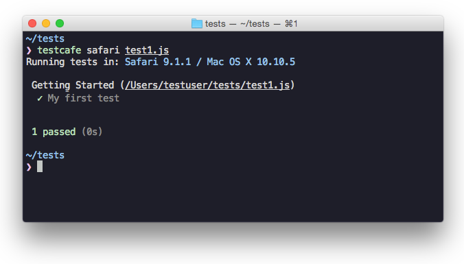

Getting Started
This guide provides step-by-step instructions on how to create a functional web test with TestCafe and consists of the following sections.
Installing TestCafe #
Ensure that Node.js and npm are installed on your computer and run the following command:
npm install -g testcafe
For more information, see Installing TestCafe.
Creating a Test #
TestCafe allows you to write tests using TypeScript or JavaScript (with its modern features like async/await).
You get all the advantages of strongly-typed languages like rich coding assistance, painless scalability, check-as-you-type code verification, etc., by using TypeScript to write your TestCafe tests. For more information about writing tests in TypeScript, see TypeScript Support.
To create a test, create a new .js or .ts file. This file must have a special structure - tests must be organized into fixtures.
Firstly, import the testcafe module.
import { Selector } from 'testcafe';
Then declare a fixture using the fixture function.
fixture `Getting Started`
In this tutorial, you create a test for the http://devexpress.github.io/testcafe/example sample page. Specify this page as a start page for the fixture using the page function.
fixture `Getting Started`
.page `http://devexpress.github.io/testcafe/example`;
Then, create the test function where you can enter test code.
import { Selector } from 'testcafe';
fixture `Getting Started`
.page `http://devexpress.github.io/testcafe/example`;
test('My first test', async t => {
// Test code
});
Running the Test #
You can run the test from a command shell by calling a single command where you specify the target browser and file path.
testcafe chrome test1.js
TestCafe automatically opens the chosen browser and starts test execution within it.
Make sure to keep the browser tab that is running tests active. Do not minimize the browser window. Inactive tabs and minimized browser windows switch to a lower resource consumption mode where tests are not guaranteed to execute correctly.
For more information on how to configure the test run, see Command Line Interface.
Viewing the Test Results #
While the test is running, TestCafe is gathering information about the test run and outputting the report in a command shell.

See Reporters for more information.
Writing Test Code #
Performing Actions on the Page #
Every test should be capable of interacting with page content. To perform user actions, TestCafe provides
a number of actions: click, hover, typeText, setFilesToUpload, etc.
They can be called in a chain.
The following fixture contains a simple test that types a developer name into a text editor and then clicks the Submit button.
import { Selector } from 'testcafe';
fixture `Getting Started`
.page `http://devexpress.github.io/testcafe/example`;
test('My first test', async t => {
await t
.typeText('#developer-name', 'John Smith')
.click('#submit-button');
});
All test actions are implemented as async functions of the test controller object t.
This object is used to access test run API.
To wait for actions to complete, use the await keyword when calling these actions or action chains.
Observing Page State #
TestCafe allows you to observe the page state. For this purpose, it offers special kinds of functions that will execute your code on the client: Selector used to get direct access to DOM elements and ClientFunction used to obtain arbitrary data from the client side. You call these functions as regular async functions, that is, you can obtain their results and use parameters to pass data to them.
The selector API provides methods and properties to select elements on the page and get their state.
For example, clicking the Submit button on the sample web page opens a "Thank you" page.
To get access to DOM elements on the opened page, the Selector function can be used.
The following example demonstrates how to access the article header element and obtain its actual text.
import { Selector } from 'testcafe';
fixture `Getting Started`
.page `http://devexpress.github.io/testcafe/example`;
test('My first test', async t => {
await t
.typeText('#developer-name', 'John Smith')
.click('#submit-button');
const articleHeader = await Selector('.result-content').find('h1');
// Obtain the text of the article header
let headerText = await articleHeader.innerText;
});
See Selecting Page Elements for more information.
Assertions #
A functional test should also check the result of actions performed. For example, the article header on the "Thank you" page should address a user using the entered name. To check if the header is correct, you have to add an assertion to the test.
The following test demonstrates how to use build-in assertions.
import { Selector } from 'testcafe';
fixture `Getting Started`
.page `http://devexpress.github.io/testcafe/example`;
test('My first test', async t => {
await t
.typeText('#developer-name', 'John Smith')
.click('#submit-button')
// Use the assertion to check if the actual header text is equal to the expected one
.expect(Selector('#article-header').innerText).eql('Thank you, John Smith!');
});